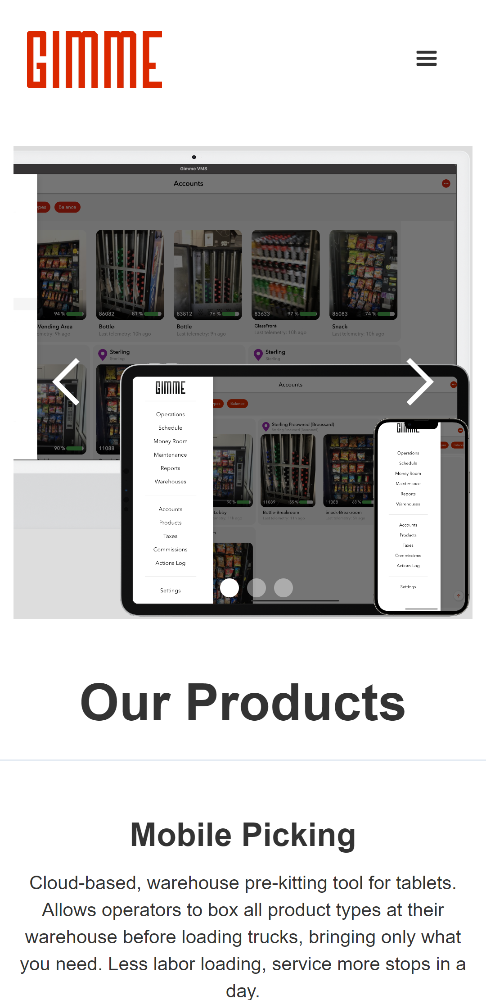

Visual Hierarchy
Gimme
gimmevending.com
This website wants us to focus on what it is the most important first. It wants the eyes of the visitors to the website capture what it considers the most important information first and that is what makes a good visual hirerarchy. It combines pictures and text in that order.
White Space and Clean Design
AppZoro
appzoro.com
The white space on this website makes the elements on the page easier to read, and it is a good design practice. The design not only looks clean but looks crisp.
PARC: Contrast
Car Pool Logistics
carpoollogistics.com
This contrast of this website shows the diferrence in visual properties. Using colors white and black make a good color constrast for accessibility.